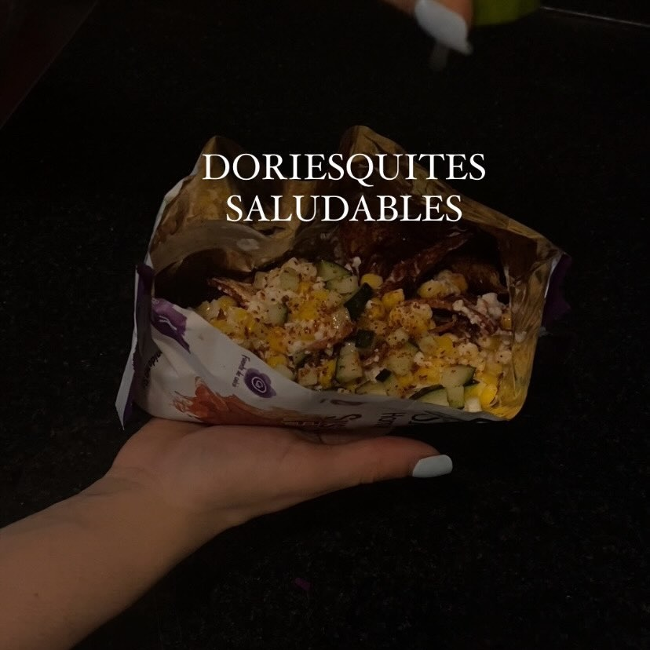

Doriesquite
Ingredientes:
- 1 bolsita de susalias flama
- ½ latita de elotes
- 3 cdas de requesón
- 2 cdas de yogur griego
- Pepino y tajín bajo en sodio (este último es opcional)
- Incluso puedes agregar carne deshebrada o pollo
Instrucciones:
- Combinar elote con yoghurt y el requesón
- Añadir a las susalias el elote, y añadir tajín y pepino o carne o pollo opcionalmente